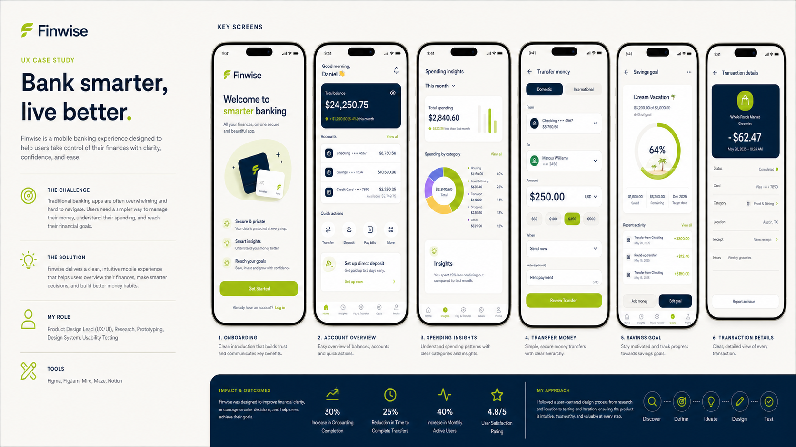
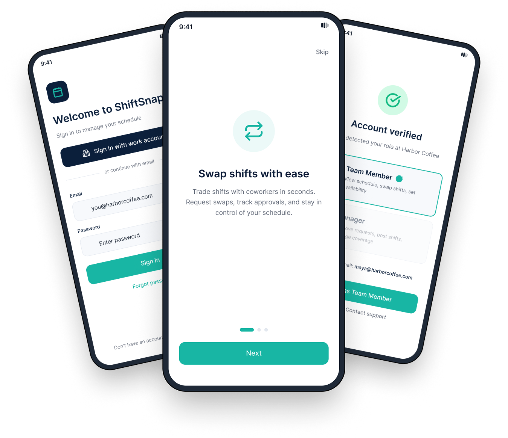
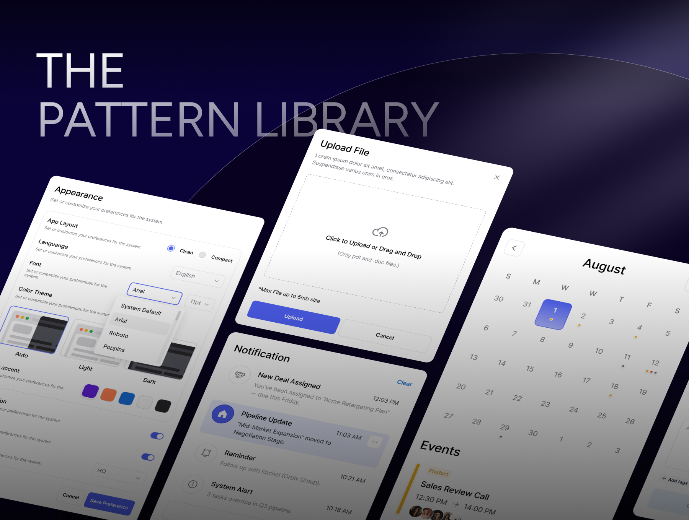

Daniel Johnson · Product Design ExecutiveAI Strategy · Enterprise DesignOps · Experience Design
I design trusted AI experiences that scale.
Responsible AIScalable systems
Design Executive & AI Strategist driving enterprise-scale product transformation. Proven track record of managing global DesignOps frameworks, governing complex multi-platform design systems, and charting advanced interactive paradigms for data-heavy digital ecosystems. Expert at bridging the gap between product vision and core systems architecture, establishing algorithmic trust layers, and leading high-performing cross-functional teams to deliver massive design debt reduction and systemic velocity spikes.
Capabilities
I turn complex systems into products people can understand, trust, and scale.
From executive product strategy to production-ready interaction systems, I help teams reduce ambiguity, align decisions, and build durable experience foundations.
01 · Intelligence
AI Experience Strategy
Defining trustworthy AI interactions, experience boundaries, human oversight, and explainable system behavior.
Typical outputsExperience principles · AI interaction models · Guardrail frameworks · High-fidelity prototypes
02 · Direction
Product Strategy & Systems Thinking
Connecting user needs, business outcomes, analytics, and technical constraints into a clear product direction.
03 · Experience
Enterprise Product Design
Designing sophisticated workflows for data-heavy, multi-role, and operationally critical products.
04 · Foundations
Design Systems & Governance
Building accessible, modular foundations that improve consistency, delivery velocity, and cross-platform quality.
ConsistencyDelivery velocity
05 · Validation
Research, Prototyping & Validation
Turning assumptions into testable workflows and evidence-backed product decisions before teams commit to build.
Understand→Prototype→Validate→Refine
06 · Scale
DesignOps Leadership
Standardizing workflows, governance, tooling, and collaboration models across global product teams.
How I engage
Discuss a challenge ↗Embedded leadership or focused transformation.
Selected projects
Work built around real people.
Eight snapshots of how I approach complex product challenges.

Fintech · Product design
Finwise
Mobile banking made reassuringly simple.
UBAMobile banking, redesigned
Good morning, FranklinTotal balance₦2,480,650
Send moneyVerified recipient₦85,000
Fintech · Mobile banking
UBA Bank Mobile
Everyday banking redesigned for speed, trust, and control.

Mobile SaaS · Product design
ShiftSnap
Empowering hourly workers with seamless shift management.
Metric OSSEV-1 · ACTIVEFR
SPATIAL TOPOLOGY!502 Bad Gateway
ERROR RATE18.7%LATENCY1.82sSATURATION91%
ERROR upstream TLS handshake timeout502 checkout request timeoutWARN circuit breaker openERROR upstream reset before headers
Enterprise SaaS · Observability platform
Metric OS
Making complex system performance clear and actionable.
Enterprise FinOps · AI operations
NAVFlow AI
Turning manual NAV operations into a transparent, governed AI workflow.

Enterprise DesignOps · Pattern systems
The Pattern Library
Scaling product consistency through reusable enterprise patterns.
GroundedSmall steps. Real balance.
Good morning, AmaraHow are you feeling?CalmFocusedTired72%Weekly balance
Wellness · Mobile app
Grounded
A calmer way to build healthier habits.
Loop LearningLive cohort92%
TODAY'S STUDIODesign critique sprint12 active learners
AI coach3 blockers foundPeer feedback8 reviews dueInstructor signal2 learners at risk
Edtech · Web platform
Loop Learning
Making remote learning feel more human, measurable, and connected.
“Daniel brings structure to complex problems and keeps every decision focused on what matters most: the person using the product.”
Designing at the intersection of form and functionLet’s talk
Have a problem worth solving?
Tell me what you’re building, what’s getting in the way, and where you’d like to go next.